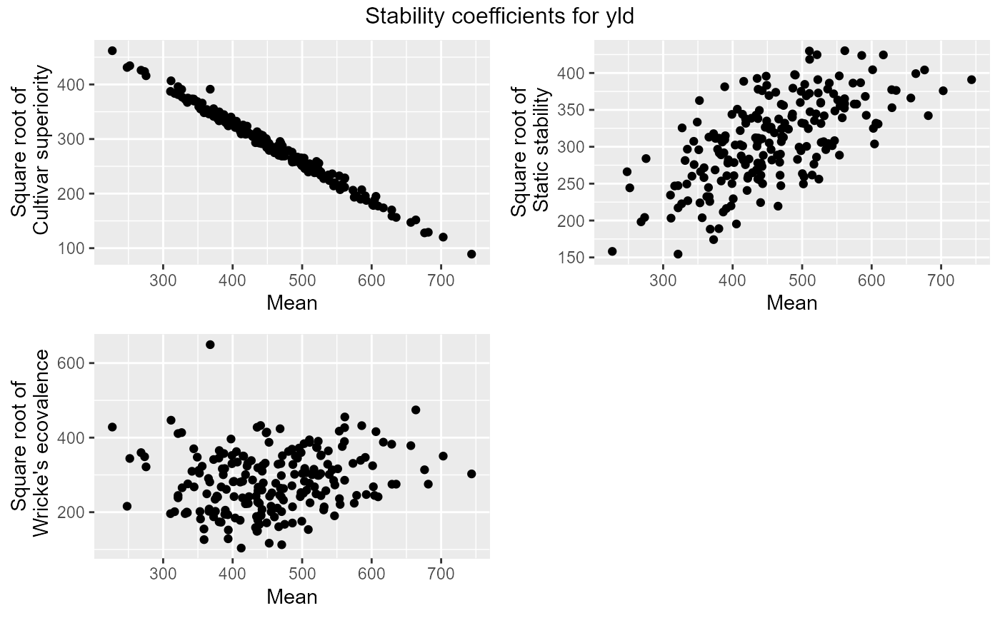

Function for creating scatter plots of the square roots of the computed stability measures against the means.
# S3 method for stability plot( x, ..., colorGenoBy = NULL, colGeno = NULL, title = paste("Stability coefficients for", x$trait), output = TRUE )
| x | An object of class stability. |
|---|---|
| ... | Not used. |
| colorGenoBy | A character string indicating a column in the |
| colGeno | A character vector with plot colors for the genotypes. A
single color when |
| title | A character string used a title for the plot. |
| output | Should the plot be output to the current device? If
|
A list of ggplot object is invisibly returned.
Other stability:
gxeStability(),
report.stability()
## Compute three stability measures for TDMaize. geStab <- gxeStability(TD = TDMaize, trait = "yld") ## Create scatter plots of the computed stability measures against the means. plot(geStab)